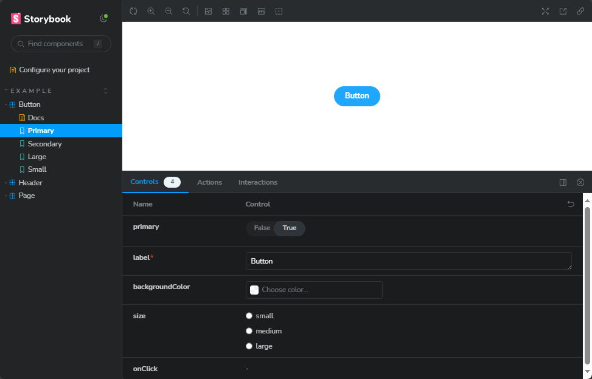

Reactコンポーネントのテスト
ここでは、React コンポーネントのテストを行う方法を紹介します。
React では、画面上のパーツをコンポーネントの単位に分割し、それぞれのコンポーネントを組み合わせて画面を構成します。
コンポーネントは、それぞれ独立して動作するため、単体でテストを行うことができます。
コンポーネント単体でテストを行いやすくするには、単機能で小さい単位でコンポーネントを分割することが重要です。
ここでは、React の章で作成したプロジェクトをTDDで再度作成します。
ツール
Testing Library
React コンポーネントのテストを行うためには、テストのツールとして Jest の他に、Testing Library を使用します。
Testing Library は、ブラウザを使わずにメモリー上で仮想的にDOMのレンダリングを行い、実際にブラウザで操作したり表示を確認したりすることなく、コンポーネントのテストを行うことができます。
レンダリングされたHTML上でのテストですので、スナップショットを取ったりするなどの実際の見た目をテストを行うことはできませんが、 想定された文字が表示されているか、ボタン等を押した時の画面上の変化、コンポーネントのイベントハンドラの動作などをテストすることができます。
Testing Library を使って、コンポーネントの単体テスト、複数のコンポーネントを組み合わせた結合テストを行います。
Testing Library は、バニラJavaScriptのDOM操作(jQuery を含む)や React 以外のVue.jsなどのフレームワークでも使用することができます。
Storybook
Jest と Testing Library を使ったテストでは、スタイルの情報を数値やテキストでしか確認できないため、実際にレンダリングした画面を確認することができません。
見た目を確認するには、ブラウザでレンダリングする方法が一番手っ取り早いのですが、React のコンポーネントは、ボトムアップ（小さく分割した最小単位）で作り上げる事が多く、 そうなると、ページ全体のコンポーネントを作成するまで確認できなくなってしまいます。
ページのコンポーネントに、仮に実装して確認することもできますが、変容や修正のたびにそれを行うのも非効率です。
Storybook を使うと、コンポーネント単位でのレンダリングを確認できる他、コンポーネントのカタログを作成することができ、そのプロパティやドキュメントを管理することもできます。
ツールのインストール
create react appで作成した場合、jestとtesting-libraryは導入済みです。
Storybook のインストールと設定のみを行います。
Testing Library のインストールと設定
Jest の導入が必要です。 '1 jest' を参照してください。
テストのスタートアップファイルを作成し、jest.config.js に設定を追加します。
| jest.setup.js | |
|---|---|
@testing-library/jest-domは、@testing-library/reactと同時にインストールされるパッケージで、 jest の expect に、DOMテスト用の matcher を追加します。
例えば、expect(element).toBeVisible()は、element要素が画面上に表示されているか（DOMの存在だけでなく、スタイルの display や visibility, opacity の状態まで確認する）を確認する matcher です。
テストファイルの先頭で書く必要がありますが、Setup Files に設定することで、全てのテストで自動的に読み込まれるようになります。
Storybook の導入
Storybook は、npm install で導入することもできますが、様々な関連パッケージの導入や設定を手動で行う必要があります。
npx を利用してインストールするとそれらを自動で行うことができますので、そちらのほうが推奨されています。
途中で、Storybook 用の eslint プラグインを入れるか、と聞いてきますので、yes としておきましょう。
インストールが完了すると、すぐに Storybook を起動し、ブラウザで表示されます。
また、package.json に、Storybook を起動するためのスクリプトが追加されるので、下記コマンドで起動することもできます。

ここで表示されているのは、インストールで入った src/stories にあるサンプルのコンポーネントです。
コンポーネントごとの表示、プロパティを変更しての変化や、マウスなどのイベントハンドラの動作などを確認することができます。
また、Docs を見るとコンポーネントやプロパティごとの説明を見ることができます。
サンプルは消しても良いのですが、実装の参考として残しておいてもいいでしょう。
TDD によるコンポーネントの実装
IncrementalButton
まずは、カウントアップ・ダウンのボタンを作成します。
ファイルの構成として、１つのコンポーネントにつき、コンポーネントファイル、テストファイル、Storybookのファイルの3つが必要です。
これらを1つのディレクトリにまとめると、コンポーネントの単位で管理しやすくなります。
さらに、他のコンポーネントから参照するのに、ディレクトリ名を指定できると記述が少なくて済むので、index.ts を作成しておきます。
import ... from でディレクトリ名を指定すると、index.ts が参照されることを利用します。
仕様を検討する
実装する前に、このコンポーネントの仕様を考え、タスクとします。
もし、ここで仕様が考えられないことがれば、仕様が煮詰まっていない、ということになります。
まず、設計を明らかにすることから始めてください。一部の仕様が決まらないのであれば、決まっている頃から実装するのも良いですが、 それを TODO として残し、チームの課題として管理してください。
-
button要素をレンダリングする -
captionプロパティの値をbuttonのテキストとして表示する - ボタンをクリックすると、
onClickプロパティの関数を実行する
これを1つずつテストを書きながら実装をします。
スケルトンコードを実装する
それぞれのスケルトンコードを書いていきます。
スケルトンコードを毎回書くのは面倒なので、hygen などのコードジェネレータを使うと便利です。
コードジェネレーター、Hygen を導入する #Node.js - Qiita
コンポーネントは、まずは何も考えずに、<div> をレンダリングするだけとします。
| src/components/IncrementalButton/IncrementalButton.tsx | |
|---|---|
index.tsは、このように export を書くと、from で指定したモジュールをそのまま参照できるようになります。
| src/components/IncrementalButton/index.ts | |
|---|---|
テストでは、とりあえずIncrementalButtonという文字がレンダリングされていることを確認するコードとしておきます。
Testing Library では、render でコンポーネントをレンダリングし、screen でレンダリングされたDOMを取得します。
screen.getByText は、引数の文字列がある要素を取得するというクエリ関数で、toBeInTheDocument は、その要素が画面上に表示されているかを確認する matcher です。
クエリには他にも、getByRole や getByLabelText などがあります。公式のドキュメントを確認してください。
About Queries | Testing Library
matcher には他に、toBeVisible や toHaveTextContent, toHaveClass などがあります。こちらも公式のドキュメントを確認してください。
GitHub - testing-library/jest-dom
| src/components/IncrementalButton/IncrementalButton.test.tsx | |
|---|---|
Storybook では、まず export default でコンポーネントの情報を記載します。
title では、コンポーネントの名前を書きますが、/で区切ることでツリー構造を作ることができます。
Template では、Storybook で表示するコンポーネントを指定します。
export cont xxx: Story = {...} で、Story と言われるコンポーネントのパターンを定義します。ここでは1つしか定義していませんが、複数定義することもできます。
コンポーネントで、色などのタイプが異なるような場合などに、それぞれの Story を定義しておくと良いでしょう。
args: {} には、コンポーネントのプロパティを指定します。これは後で入れましょう。
| src/components/IncrementalButton/IncrementalButton.stories.tsx | |
|---|---|
ボタンをレンダリングする
まずは、button 要素がレンダリングされていることを書くにするテストを書きます。
| src/components/IncrementalButton/IncrementalButton.test.tsx | |
|---|---|
getByRole は、role 属性で指定された要素を取得するクエリ関数です。<button>などは、規定のroleがあり、指定しなくても取得できます。
[React TestingLibrary]各HTMLタグに対応するroleを理解する #React - Qiita
上で紹介したように、要素の取得クエリにはいくつか有るのですが、roleを使うことが推奨されます。
コンポーネントのテストは、よりユーザーの視点・認識でのテストが必要なためで、roleはユーザーに提供する要素の意味を指す属性のため、適切に設定されていることが、アクセシビリティの観点からも重要だからです。
逆に、role が指定されていない場合、アクセシビリティが低いUIとも言えます。
testing-library でユーザの気持ちになって書くフロントエンドのテスト
Webアクセシビリティが向上する！HTMLのrole属性の使い方を解説 - WEBCAMP MEDIA
テストを実行すると、当然ですがエラーになります。エラーが解消するようにコンポーネントを実装します。
| src/components/IncrementalButton/IncrementalButton.tsx | |
|---|---|
これでテストが通ります。
タスクの状態
-
button要素をレンダリングする -
captionプロパティの値をbuttonのテキストとして表示する - ボタンをクリックすると、
onClickプロパティの関数を実行する
captionプロパティの値をbuttonのテキストとして表示する
このテストでは、captionプロパティに値を入れて、ボタン要素のテキストにそれが表示されるかを確認します。
captionプロパティをまだ定義していないので、エラーになりますが、ここでは気にしないでおきます。
| src/components/IncrementalButton/IncrementalButton.test.tsx | |
|---|---|
テストをクリアするように、コンポーネントを実装します。
| src/components/IncrementalButton/IncrementalButton.tsx | |
|---|---|
一旦はテストが成功しますが、これではだめなことは自明です。そのために別のcaptionの値を渡すテストを追加します。
プロパティを変更して、再度レンダリングするには、
renderの戻り値のrerenderを使います。
最後の expect でエラーになるので、実装を修正します。
| src/components/IncrementalButton/IncrementalButton.tsx | |
|---|---|
これでこのタスクは完了です。
タスクの状態
-
button要素をレンダリングする -
captionプロパティの値をbuttonのテキストとして表示する - ボタンをクリックすると、
onClickプロパティの関数を実行する
ボタンをクリックすると、onClickプロパティの関数を実行する
これは、ユーザーのアクションが発生した時のテストです。
このテストは、別のテストケースとして書きましょう。
Testing Library では、fireEvent でクリックなどのイベントを発生させることができます。
検証では、Jestのモック関数jest.fn()をonClickプロパティに渡して、それが実行されたことを確認します。
コンポーネントを実装します。
| src/components/IncrementalButton/IncrementalButton.tsx | |
|---|---|
テストが成功したかと思います。
タスクの状態
-
button要素をレンダリングする -
captionプロパティの値をbuttonのテキストとして表示する - ボタンをクリックすると、
onClickプロパティの関数を実行する
Storybook でスタイルを調整する
機能面の実装は完了したので、Storybook でスタイルを整えます。
コンポーネントにプロパティを追加したので、Storybook の args にも追加しますが、イベントハンドラに関しては、それをStorybookがキャッチできるように、default.argTypesに指定しておきます。
| src/components/IncrementalButton/IncrementalButton.stories.tsx | |
|---|---|
Storybook で確認してみましょう。
Controls で、プロパティを変更すると、プレビューが変更されることが確認できます。
ボタンをクリックすると、Actions でクリックイベントが実行されたことが確認できます。

では、スタイルを適用してきましょう。ディレクトリに CSSモジュールファイル incrementalButton.module.css を追加します。
| src/components/IncrementalButton/incrementalButton.module.css | |
|---|---|
コンポーネントでスタイルインポートして適用します。
| src/components/IncrementalButton/IncrementalButton.tsx | |
|---|---|
このボタンの実装は以上で完了です。
DisplayNumber
このコンポーネントは、渡されたプロパティを表示するだけなので、ここでは省略します。
Counter
IncrementalButton, DisplayNumber を組み合わせて、カウンターを作成します。
そのため、このコンポーネントの仕様は、ボタンよりもより具体的になります。
- マイナスのインクリメントボタンがある
- プラスのインクリメントボタンがある
- カウンターの初期値'0'が表示されている。
- マイナスのインクリメントボタンを押すと、カウンターの値が1減る
- プラスのインクリメントボタンを押すと、カウンターの値が1増える
以上です。
スケルトンコードを実装する
ボタン時と同じように、スケルトンコードを実装します。内容は、ボタンとほぼ同じです。
| src/components/Counter/Counter.tsx | |
|---|---|
| src/components/Counter/index.ts | |
|---|---|
| src/components/Counter/Counter.stories.tsx | |
|---|---|
マイナスのインクリメントボタンがある
まずは、マイナスのインクリメントボタンがあることを確認するテストを書きます。
これは、キャプションが - となっているボタン要素を取得するテストとします。
getByRole の第2引数は、HTML要素の aria-label 属性で指定される値を指定することができます。
| src/components/Counter/Counter.test.tsx | |
|---|---|
何時も実装していないので、getByRole の行でエラーになるでしょう。
まずは、この行がクリアするようにコンポーネントを実装します。最低限、ビルドエラーにならないように書きます。
| src/components/Counter/Counter.tsx | |
|---|---|
それでも、getByRole がエラーになります。これは、<IncrementalButton> のプロパティに、aria-label が指定されておらず、無視されているからです。
IncrementalButton のプロパティにこれを追加して、button の属性として割り当てるようにします。
また、aria-label にはここでは決まった値('increment | decrement')しか無いので、TypeScript の String Literal Type を使うのが良いでしょう。
ただ今は、テストがクリアすることだけを考えたいので、TODO としておきます。
コンポーネント関数の引数内の
'aria-label': ariaLabelは、オブジェクトの分割代入で、変数名を変更するときにの書き方です。
分割代入 - JavaScript | MDN
これで、テストのgetByRole の行はクリアしました。次は caption に - を入れて、このタスクのテストが成功することを確認します。
| src/components/Counter/Counter.tsx | |
|---|---|
最後に先程の TODO を解決しておきます。
| src/components/IncrementalButton/IncrementalButton.tsx | |
|---|---|
以上で、このタスクは完了です。
タスクの状態
- マイナスのインクリメントボタンがある
- プラスのインクリメントボタンがある
- カウンターの初期値'0'が表示されている。
- マイナスのインクリメントボタンを押すと、カウンターの値が1減る
- プラスのインクリメントボタンを押すと、カウンターの値が1増える
プラスのインクリメントボタンがある
これはマイナスのボタンとほぼ同じなので、コードだけ載せておきます。
コンポーネントの実装では、フラグメントを <>～</> で囲うのを忘れないでください。
また aria-label の String Literal 型を試す意味で、想定されない値を入れて、TypeScript でエラーになることを確認しても良いでしょう。
| src/components/Counter/Counter.tsx | |
|---|---|
タスクの状態
- マイナスのインクリメントボタンがある
- プラスのインクリメントボタンがある
- カウンターの初期値'0'が表示されている。
- マイナスのインクリメントボタンを押すと、カウンターの値が1減る
- プラスのインクリメントボタンを押すと、カウンターの値が1増える
カウンターの初期値'0'が表示されている
要素の取得して、getByText でも良いのですが、ここでも getByRole を使ってみます。
getByRole の第1引数には、role 属性の値を指定しますが、generic は、role 属性が指定されていない要素を指定する値です。
<span> などのインライン要素は、role 属性が指定されていないことが多いので、generic を使うことが多いです。
| src/Counter/Counter.tsx | |
|---|---|
DisplayNumberコンポーネントに、aria-labelを追加します。
| src/components/DisplayNumber/DisplayNumber.tsx | |
|---|---|
テストが成功します。しかし、この実行ではだめなのはわかるかと思います。
ただ、これは次のタスクで解消するのがわかるので、このタスクはここまでとします。
タスクの状態
- マイナスのインクリメントボタンがある
- プラスのインクリメントボタンがある
- カウンターの初期値'0'が表示されている。
- マイナスのインクリメントボタンを押すと、カウンターの値が1減る
- プラスのインクリメントボタンを押すと、カウンターの値が1増える
マイナスのインクリメントボタンを押すと、カウンターの値が1減る
次はいよいよインタラクティブな機能のテストと実装に入ります。
まずはテストです。これは別なテストケースとして書きましょう。
これをクリアする最短の実装をします。
| src/components/Counter/Counter.tsx | |
|---|---|
このタスクのテストは完了しますが、先に書いたテストが失敗します。
それでは両方をクリアする実装に変えていきましょう。ここで、カウンターの数値を状態として保持する必要がある事がわかるので、useState を使います。
今度は、前に書いたテストが成功しました。これによって初期値の値の実装方法を変えても、テストが成功していることからデグレードの心配がなくなります。
ボタンを押した時のテストが失敗していますので、ボタンのclickイベントでcounterの値を減らす処理を書きましょう。
| src/components/Counter/Counter.tsx | |
|---|---|
テストは成功しますが、1回だけだと心配なので、2回押したテストも書きましょう。
2回目のクリックのテストも成功します。しかし、このイベントハンドラの書き方は、わかりやすくkはありますが、あなたは React を学習した経験から、useCallbackを使うべき、と考えます。
これに気づくには、Reactの知識が必要です。テストでは全てをカバーすることはできません。このように言語やフレームワークの正しい知識を得ておく必要も、必要です。
おっと、エラーになりました。-2になるはずが、-1になっているというエラーです。
そうです。useCallback の第2引数には、関数で使用している外部の変数を記述するのを忘れていました。テストのお陰でバグを未然に防ぐことができました。
| src/components/Counter/Counter.tsx | |
|---|---|
テストが成功しました。もう少し改善できそうです。countの値を使うのではなく、setCountで関数を使うこともできたはずです。
そうすることで、この関数は外部の変数に依存しないので、第2引数が不要となります。
| src/components/Counter/Counter.tsx | |
|---|---|
このように変更しても、テストが成功したままです。安心してリファクタリングできました。
タスクの状態
- マイナスのインクリメントボタンがある
- プラスのインクリメントボタンがある
- カウンターの初期値'0'が表示されている。
- マイナスのインクリメントボタンを押すと、カウンターの値が1減る
- プラスのインクリメントボタンを押すと、カウンターの値が1増える
プラスのインクリメントボタンを押すと、カウンターの値が1増える
これは、マイナスと同じように進められますので、自身で実装してみてください。
Storybook で確認してみる
Counter は、プロパティが無いので、スケルトンコードのまま動くと思います。
実際に操作して試してみましょう！
まとめ
React の TDD を実践してみましたが、いかがだったでしょうか？
ここまで細かくしなくても・・・と思われるかと思います。実際ここまで小さくステップを踏んでやることはあまりないと思います。
今回は、TDD として配慮すべき点や、その流れを皆さんに理解していただきたく、このようにしました。
もう少し省略してもいいと思いますが、自身がなかったり、実装していて混乱してしまった場合、ステップを細かくしたり、タスクを細分化してみてください。
特に、タスクは単純な1つのことを実現することを目標に分けてください。タスクの実装が思うように行かなかったり複雑だと感じる場合、タスクで2つ以上のことをやっている可能性があります。
このあたりの感覚を掴むのも、初めは難しいと思いますので、なれないうちは、小さく刻んでいくことが良いでしょう。また、ペアプログラミングやモブプログラミングで複数人で実施するのも非常に良いと思います。
TDD を実践することで、効率UP、内部品質、保守性、試験性の向上がはかれ、また自身が作ったものに自身が持て、心理的安全性の向上にも繋がります。
そしてなにより、オールグーンが気持ちいい！